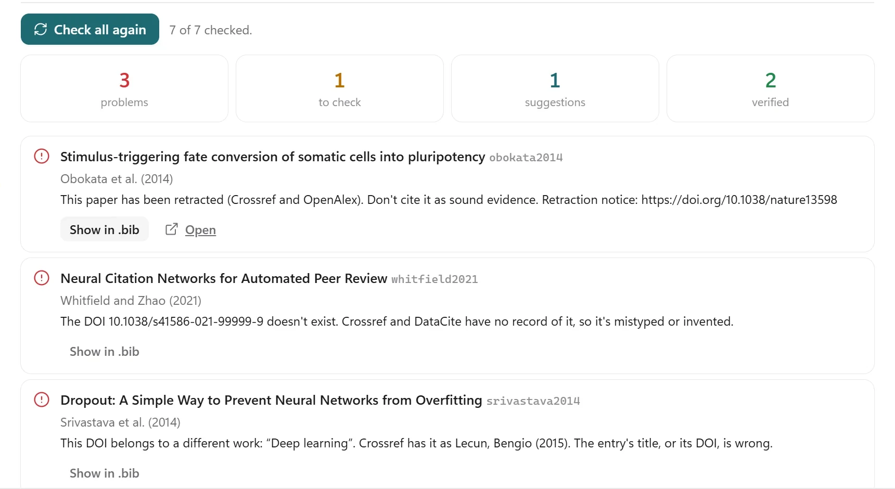
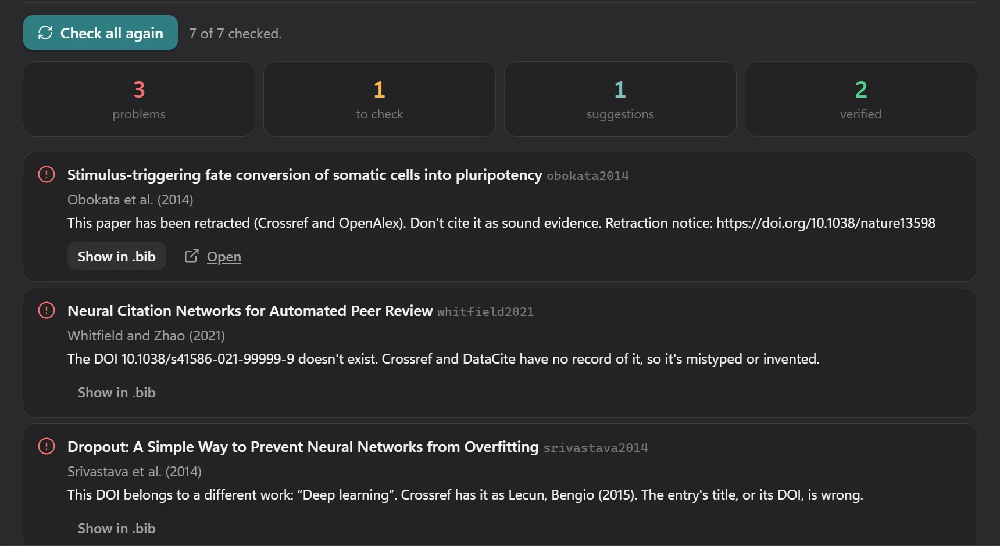
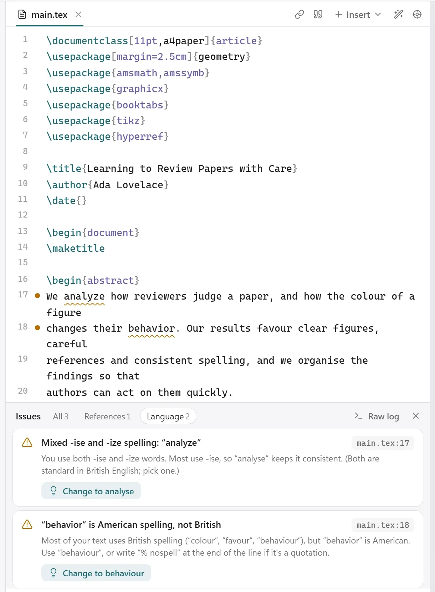
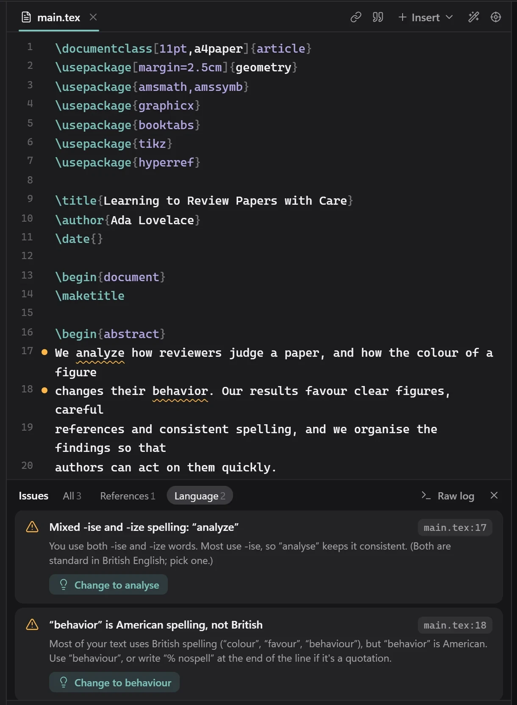

Nothing to set up
One pip install. Engine and packages included.
An open-source LaTeX studio for your own computer. No account, no limits, nothing uploaded.
pipx install texkit-studio


One pip install. Engine and packages included.
No time limit, no queue. Works offline.
Your files never leave your computer.
Figures, citations and a submission check.
Look up every entry in Crossref, OpenAlex and arXiv. Spot invented, wrong and retracted references.




Mixed US and UK spelling is underlined and fixed in one click.
Set any .tex file, in any folder, as the main one from its ⋯ menu.
Learn more


One list of what is left, with the page and word counts.
pipx install texkit-studio
cd ~/papers/my-thesis texkit
The PDF follows your typing.
Quick startOnly actions you start, like checking references, go online.